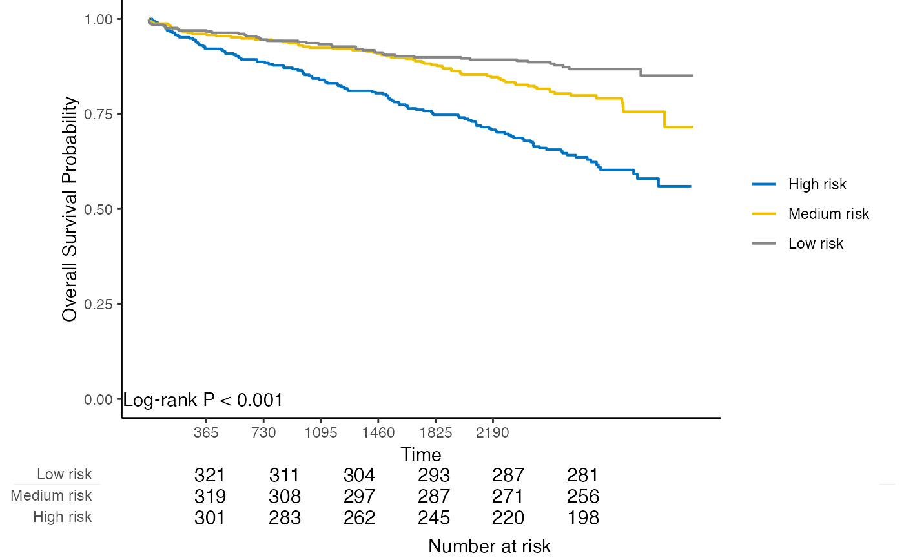

Kaplan-Meier plot with number at risk table for internal calibration and external calibration results
Source:R/4_7_kmplot.R
kmplot.RdKaplan-Meier plot with number at risk table for internal calibration and external calibration results
kmplot( object, group.name = NULL, time.at = NULL, col.pal = c("JCO", "Lancet", "NPG", "AAAS") )
Arguments
| object | An object returned by |
|---|---|
| group.name | Risk group labels. Default is Group 1, Group 2, ..., Group k. |
| time.at | Time points to evaluate the number at risk. |
| col.pal | Color palette to use. Possible values are
|
Examples
data("smart") # Use the first 1000 samples as training data # (the data used for internal validation) x <- as.matrix(smart[, -c(1, 2)])[1:1000, ] time <- smart$TEVENT[1:1000] event <- smart$EVENT[1:1000] # Take the next 1000 samples as external calibration data # In practice, usually use data collected in other studies x_new <- as.matrix(smart[, -c(1, 2)])[1001:2000, ] time_new <- smart$TEVENT[1001:2000] event_new <- smart$EVENT[1001:2000] # Fit Cox model with lasso penalty fit <- fit_lasso(x, survival::Surv(time, event), nfolds = 5, rule = "lambda.1se", seed = 11) # Internal calibration cal.int <- calibrate( x, time, event, model.type = "lasso", alpha = 1, lambda = fit$lambda, method = "cv", nfolds = 5, pred.at = 365 * 9, ngroup = 3 )#> Start fold 1 #> Start fold 2 #> Start fold 3 #> Start fold 4 #> Start fold 5# External calibration cal.ext <- calibrate_external( fit, x, time, event, x_new, time_new, event_new, pred.at = 365 * 5, ngroup = 3 ) kmplot( cal.ext, group.name = c("High risk", "Medium risk", "Low risk"), time.at = 1:6 * 365 )